تصوير عظم الفخذPractical Lecture 4: Femur Radiography
عملي · م04 · 8.6 دقيقةأقسام المحاضرة (8)
- إسقاطات عظم الفخذ والوركProjections of the Hip and Femur
- العوامل التقنيةTechnical Factors
- إسقاط الورك الأمامي الخلفي (جانب واحد)AP Unilateral Hip
- الإسقاط المحوري الجانبي من الأسفل إلى الأعلى (دانيليوس-ميلر)Axiolateral Inferosuperior (Danelius-Miller)
- الإسقاط المحوري الجانبي المعدَّل (كليمنتس-ناكاياما)Modified Axiolateral (Clements-Nakayama)
- إسقاط AP لعظم الفخذ: الأوسط والبعيدAP Femur: Mid- and Distal
- الإسقاط الجانبي لعظم الفخذ: الأوسط والبعيدLateral Femur: Mid- and Distal
- الإسقاط الجانبي لعظم الفخذ: الأوسط والقريبLateral Femur: Mid- and Proximal
إسقاطات عظم الفخذ والوركProjections of the Hip and Femur
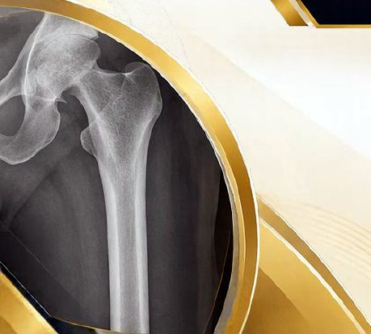
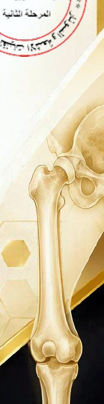
- 1. AP unilateral Hip projection: Hip and proximal Femurإسقاط AP للورك من جانب واحد: الورك والجزء القريب من عظم الفخذ
- 2. Axiolateral inferosuperior projection: Hip and proximal Femur—traumaالإسقاط المحوري الجانبي من الأسفل إلى الأعلى: الورك والجزء القريب من عظم الفخذ (الرضّ)
- 3. Modified axiolateral—possible trauma projection: Hip and proximal Femurالإسقاط المحوري الجانبي المعدَّل (احتمال الرضّ): الورك والجزء القريب من عظم الفخذ
- 4. AP projection: Femur—mid- and distalإسقاط AP: عظم الفخذ، الجزء الأوسط والبعيد
- 5. Lateral-mediolateral or lateromedial projections: Femur : mid- and distalالإسقاطان الجانبيان (إنسي وحشي أو وحشي إنسي): عظم الفخذ، الجزء الأوسط والبعيد
- 6. Lateral-mediolateral projection: femur: mid-and proximalالإسقاط الجانبي (إنسي وحشي): عظم الفخذ، الجزء الأوسط والقريب
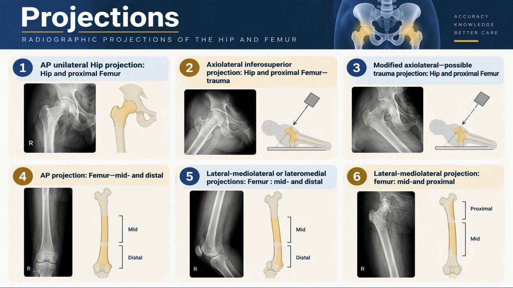
العوامل التقنيةTechnical Factors
- • Minimum SID is 40 inches (102 cm).أقل مسافة بين المصدر والمستقبِل SID هي 40 إنش (102 سم).
- • IR size—35 × 43 cm (14 × 17 inches), Lengthwiseحجم مستقبِل الصورة IR: 35 × 43 سم (14 × 17 إنش)، بالطول.
- • Exposure : 65-70 kVp , 8-12 mAsعوامل التعريض: 65–70 kVp، و8–12 mAs.
- • Shielding Shield radiosensitive tissues outside region of interest. Ensure shielding does not obscure any aspect of femur.الوقاية: احمِ الأنسجة الحسّاسة للإشعاع الواقعة خارج المنطقة المطلوبة، وتأكّد ألّا يحجب الواقي أي جزء من عظم الفخذ.
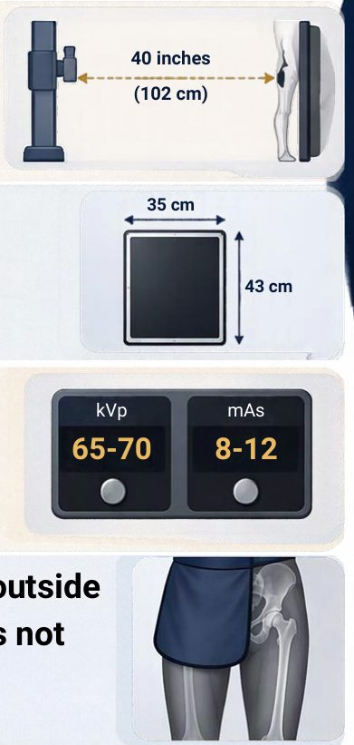
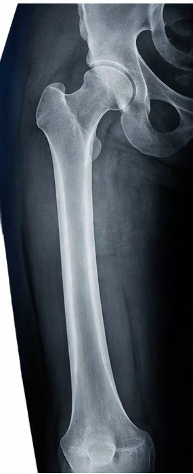
إسقاط الورك الأمامي الخلفي (جانب واحد)AP Unilateral Hip
AP unilateral Hip projection: Hip and proximal Femur
إسقاط AP للورك من جانب واحد: الورك والجزء القريب من عظم الفخذ.
دواعي الفحصClinical Indications
- • Postoperative or follow-up examination to demonstrate the acetabulum, femoral head, neck, and greater trochanter.فحص بعد العملية الجراحية أو فحص متابعة لإظهار الحُقّ، ورأس عظم الفخذ، وعنقه، والمدوَّر الكبير.
- • Evaluate condition and placement of any existing orthopedic appliance.تقييم حالة أي أداة تقويمية موجودة وموضعها.
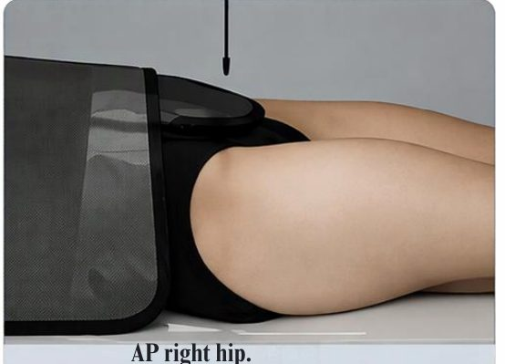
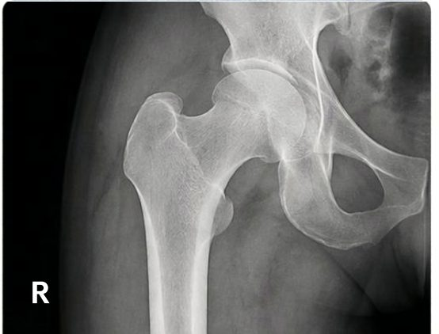
وضعية المريضPatient Position
With patient supine, place arms at sides or across superior chest.
المريض مستلقٍ على ظهره، والذراعان إلى الجانبين أو على أعلى الصدر.
وضعية الجزءPart Position
- • Locate femoral neck and align to CR and to midline of table and/or IR.حدّد موضع عنق عظم الفخذ وطابِقه مع الشعاع المركزي ومع خط منتصف الطاولة و/أو IR.
- • Ensure no rotation of pelvis (equal distance from ASISs to table).تأكّد من عدم دوران الحوض (تساوي مسافة الشوكتين ASIS عن الطاولة).
- • Rotate affected leg internally 15° to 20°.دوّر الساق المصابة إلى الداخل 15 إلى 20 درجة.
الشعاع المركزيCR
- • CR is perpendicular to IR, directed to 1 to 2 inches (2.5 to 5 cm) distal to midfemoral neck (to include all of orthopedic appliance of hip, if present).الشعاع المركزي عمودي على IR، ويُوجَّه إلى نقطة 1 إلى 2 إنش (2.5 إلى 5 سم) أسفل منتصف عنق عظم الفخذ (لتشمل الصورة كل الأداة التقويمية في الورك إن وُجدت).
- • Femoral neck can be located about 1 to 2 inches (3 to 5 cm) medial and 3 to 4 inches (8 to 10 cm) distal to ASIS.يُحدَّد عنق عظم الفخذ على بُعد 1 إلى 2 إنش (3 إلى 5 سم) إنسيّ ASIS، و3 إلى 4 إنش (8 إلى 10 سم) أسفلها.
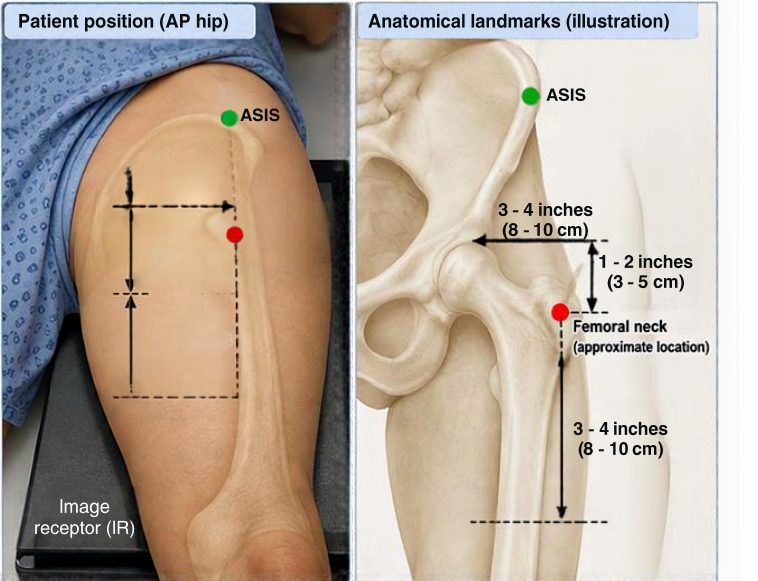
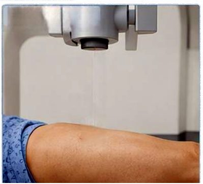
ما تُظهره الصورةAnatomy Demonstrated
- • The proximal one-third of the femur should be visualized, along with the acetabulum and adjacent parts of the pubis, ischium, and ilium.يجب أن يظهر الثلث القريب من عظم الفخذ مع الحُقّ والأجزاء المجاورة من العانة والإسك والحرقفة.
- • Any existing orthopedic appliance should be visible in its entirety.يجب أن تظهر أي أداة تقويمية موجودة بكاملها.
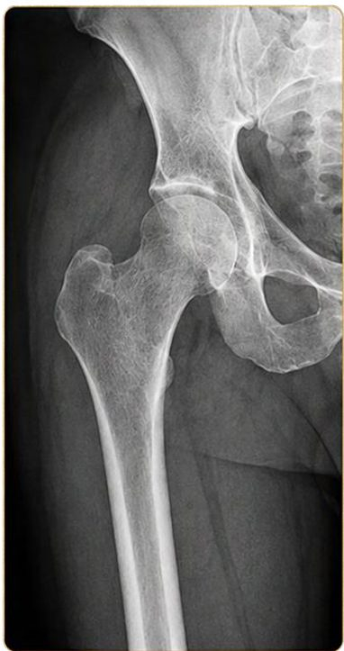
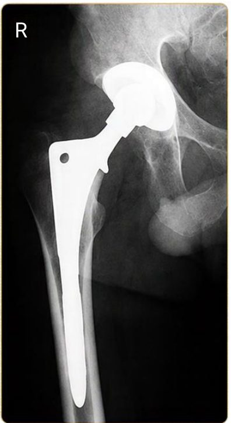
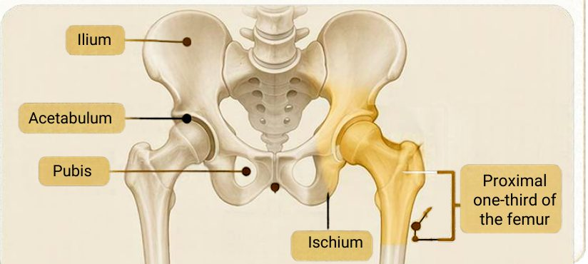
الإسقاط المحوري الجانبي من الأسفل إلى الأعلى (دانيليوس-ميلر)Axiolateral Inferosuperior (Danelius-Miller)
Axiolateral inferosuperior projection: Hip and proximal Femur—trauma Danelius-miller method
الإسقاط المحوري الجانبي من الأسفل إلى الأعلى: الورك والجزء القريب من عظم الفخذ، حالة الرضّ. طريقة دانيليوس-ميلر.
NOTE: This is a common projection for trauma, surgery, and postsurgery patients.
ملاحظة: هذا إسقاط شائع لمرضى الرضّ والجراحة وما بعد الجراحة.
دواعي الفحصClinical Indications
- • Lateral view for fracture or dislocation assessment in trauma hip situations when affected leg cannot be movedإسقاط جانبي لتقييم الكسر أو الخلع في حالات رضّ الورك عندما يتعذّر تحريك الساق المصابة.
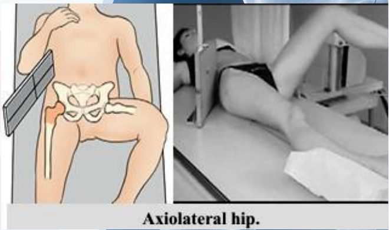
وضعية المريضPatient Position
- • Patient is supine, with pillow provided for head;المريض مستلقٍ على ظهره، ونضع وسادة للرأس؛
- • elevate pelvis 1 to 2 inches (3 to 5 cm) if possible by placing supports under pelvis (more important for thin patients and for patients on a soft pad or in a bed).نرفع الحوض 1 إلى 2 إنش (3 إلى 5 سم) إن أمكن بوضع دعامات تحته (وهذا أهم عند المرضى النحيفين وعند المرضى على وسادة طرية أو في السرير).
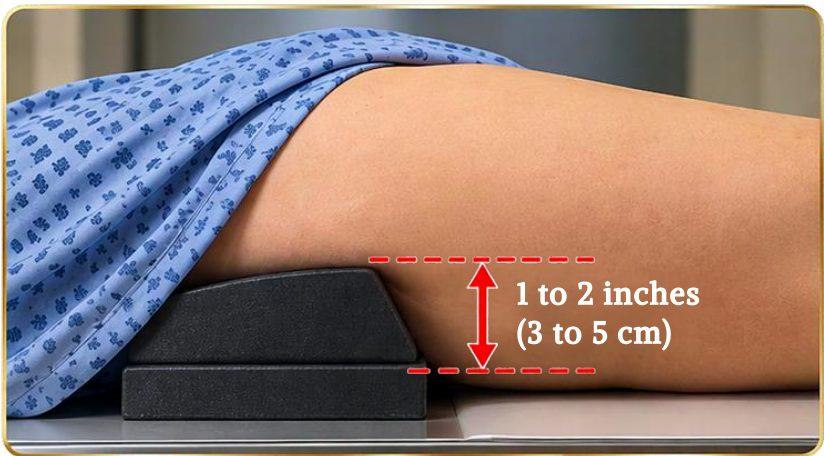
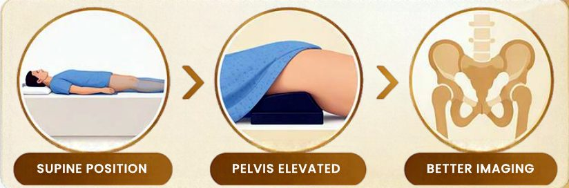
وضعية الجزءPart Position
- • Flex and elevate unaffected leg so that thigh is near vertical position and outside collimation field. Support in this position. (Do NOT place leg on collimator or x-ray tube due to risk of burns or electrical shock).اثنِ الساق السليمة وارفعها حتى يصير الفخذ قريباً من الوضع العمودي وخارج حقل المحدِّد. ثبّتها بدعامة في هذا الوضع. (لا تضع الساق على المحدِّد أو أنبوب الأشعة بسبب خطر الحروق أو الصدمة الكهربائية).
- • Place IR in crease above iliac crest and adjust so that it is parallel to femoral neck and perpendicular to CR. Use cassette holder if available, or use sandbags to hold cassette in place.ضع IR في الثنية فوق عُرف الحرقفة، وعدّله ليكون موازياً لعنق عظم الفخذ وعمودياً على الشعاع المركزي. استعمل حامل الكاسيت إن وُجد، أو أكياس الرمل لتثبيته.
- • Internally rotate affected leg 15° to 20° unless contraindicated by possible fracture or other pathologic process (see warning above).دوّر الساق المصابة إلى الداخل 15 إلى 20 درجة ما لم يمنع ذلك احتمال وجود كسر أو حالة مرضية أخرى (انظر التحذير أعلاه).
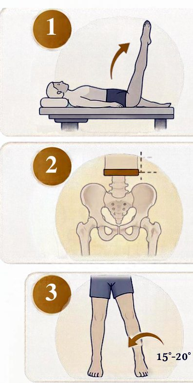
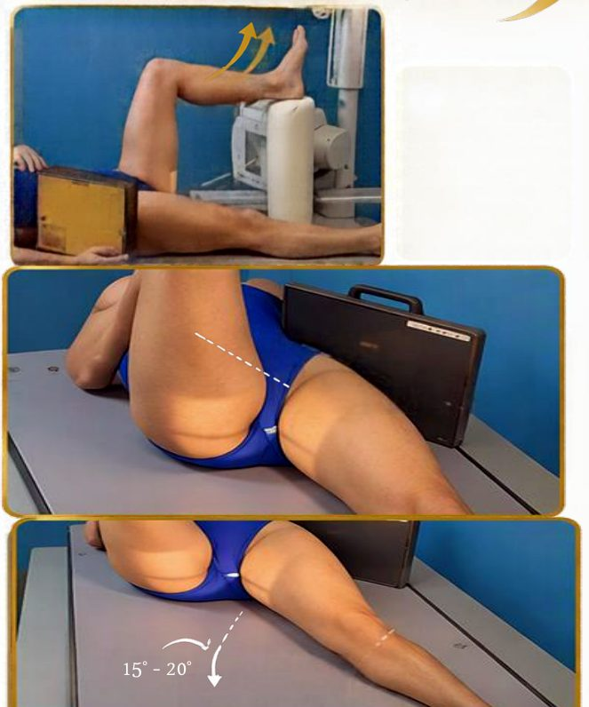
الشعاع المركزيCR
- • CR is perpendicular to femoral neck and to IR.الشعاع المركزي عمودي على عنق عظم الفخذ وعلى IR.
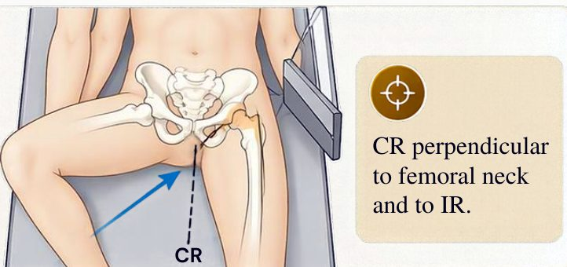
ما تُظهره الصورةAnatomy Demonstrated
- • Entire femoral head and neck, trochanter, and acetabulum should be visualized.يجب أن يظهر رأس عظم الفخذ وعنقه كاملين مع المدوَّر والحُقّ.
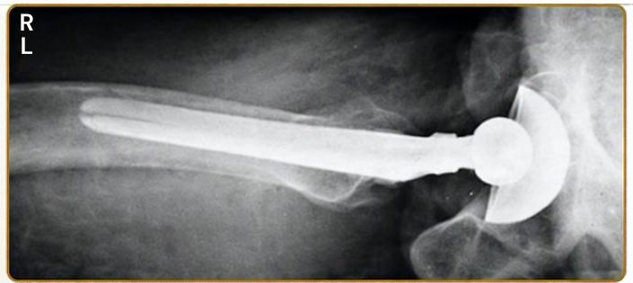
الإسقاط المحوري الجانبي المعدَّل (كليمنتس-ناكاياما)Modified Axiolateral (Clements-Nakayama)
Modified axiolateral—possible trauma projection: Hip and proximal Femur Clements-nakayama method
الإسقاط المحوري الجانبي المعدَّل: احتمال الرضّ، للورك والجزء القريب من عظم الفخذ. طريقة كليمنتس-ناكاياما.
دواعي الفحصClinical Indications
- • Surgery for hip prosthesis when the patient has limited movement in both lower limbs and the inferosuperior projection cannot be obtained.جراحة مفصل الورك الصناعي عندما تكون حركة الطرفين السفليين محدودة ويتعذّر الحصول على الإسقاط من الأسفل إلى الأعلى.
وضعية المريضPatient Position
With patient supine, position affected side near edge of table with both legs fully extended. Provide pillow for head and place arms across superior chest.
المريض مستلقٍ على ظهره، ونضع الجانب المصاب قرب حافة الطاولة وكلتا الساقين ممدودتان تماماً. نضع وسادة للرأس، والذراعان عبر أعلى الصدر.
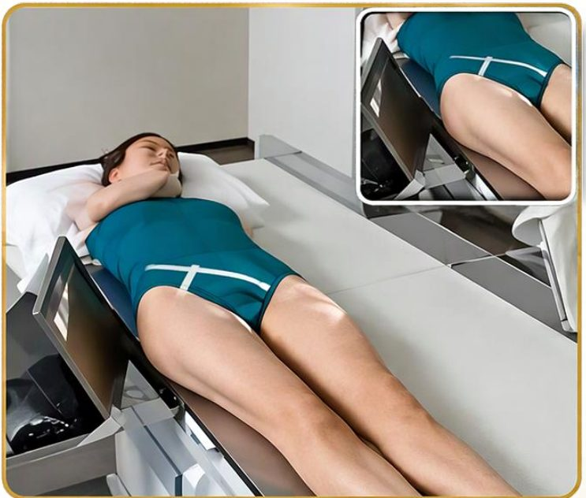
وضعية الجزءPart Position
- • Maintain leg in neutral (anatomic) position (15° posterior CR angle compensates for internal leg rotation).أبقِ الساق في الوضع المحايد (التشريحي) (زاوية الشعاع المركزي 15 درجة نحو الخلف تعوّض التدوير الداخلي للساق).
- • Rest IR on extended Bucky tray, which places the bottom edge of the IR about 2 inches (5 cm) below the level of the tabletop.أسنِد IR على درج بوكي الممدود، فتصير الحافة السفلى لـ IR أسفل مستوى سطح الطاولة بنحو 2 إنش (5 سم).
- • Tilt IR about 15° from vertical and adjust alignment of IR to ensure that face of IR is perpendicular to CR to prevent grid cutoff.أمِل IR نحو 15 درجة عن الوضع العمودي، وعدّل محاذاته ليكون وجهه عمودياً على الشعاع المركزي لمنع قطع الشبكة (grid cutoff).
- • Center centerline of IR to projected CR.اجعل خط منتصف IR على امتداد مسار الشعاع المركزي.
الشعاع المركزيCR
- • Angle CR mediolaterally as needed so that it is perpendicular to and centered to femoral neck. It should be angled posteriorly 15° to 20° from horizontal.وجّه الشعاع المركزي إنسياً وحشياً بحسب الحاجة ليكون عمودياً على عنق عظم الفخذ ومتمركزاً عليه. ويجب أن يميل نحو الخلف 15 إلى 20 درجة عن الأفقي.
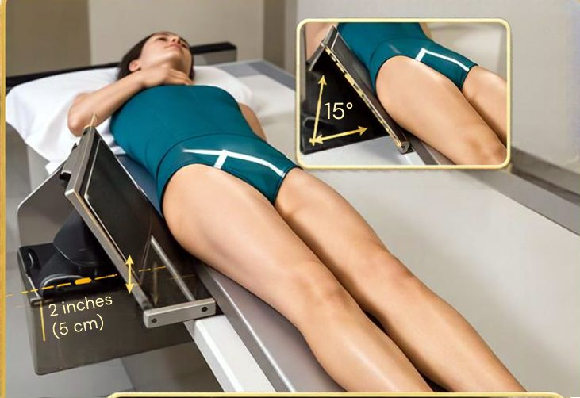
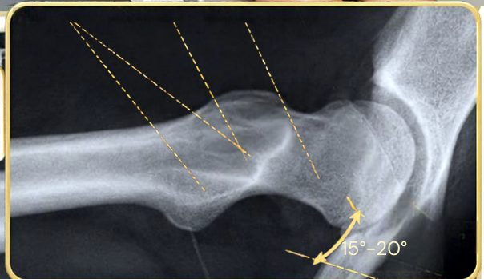
إسقاط AP لعظم الفخذ: الأوسط والبعيدAP Femur: Mid- and Distal
AP projection: Femur—mid- and distal
إسقاط AP: عظم الفخذ، الجزء الأوسط والبعيد.
وضعية المريضPatient Position
Place patient in the supine position, with femur centered to midline of table; give pillow for head. (This projection also may be done on a stretcher with a portable grid placed under the femur.)
نضع المريض مستلقياً على ظهره، وعظم الفخذ في منتصف الطاولة، ونعطيه وسادة للرأس. (يمكن إجراء هذا الإسقاط أيضاً على نقّالة بوضع شبكة محمولة تحت عظم الفخذ.)
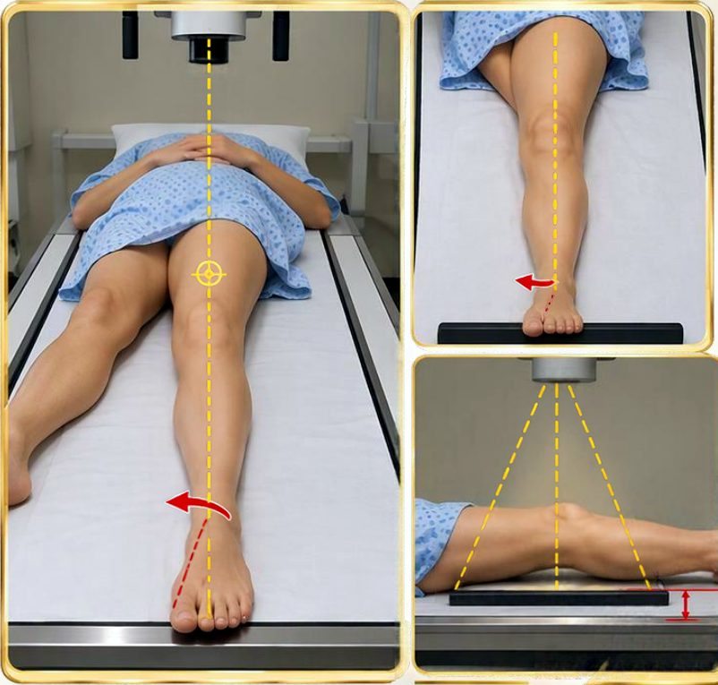
وضعية الجزءPart Position
- • Align femur to CR and to midline of table or IR.طابِق عظم الفخذ مع الشعاع المركزي ومع خط منتصف الطاولة أو IR.
- • Rotate leg internally about 5° for a true AP, as for an AP knee. (For proximal femur, 15° to 20° internal leg rotation is required, as for an AP hip.)دوّر الساق إلى الداخل نحو 5 درجات للحصول على AP حقيقي، كما في AP للركبة. (وللجزء القريب من الفخذ يلزم تدوير داخلي 15 إلى 20 درجة، كما في AP للورك.)
- • Ensure that knee joint is included on IR, considering the divergence of the x-ray beam. (Lower IR margin should be approximately 2 inches [5 cm] below knee joint.)تأكّد من دخول مفصل الركبة ضمن IR مع مراعاة تباعد حزمة الأشعة. (يجب أن تكون الحافة السفلى لـ IR أسفل مفصل الركبة بنحو 2 إنش [5 سم].)
الشعاع المركزيCR
- • CR is perpendicular to femur and IR.الشعاع المركزي عمودي على عظم الفخذ وعلى IR.
- • Direct CR to midpoint of IR.وجّه الشعاع المركزي إلى منتصف IR.
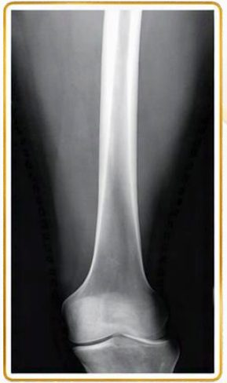
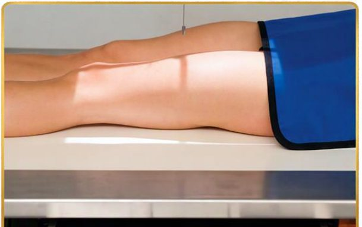
الإسقاط الجانبي لعظم الفخذ: الأوسط والبعيدLateral Femur: Mid- and Distal
Lateral-mediolateral or lateromedial projections: Femur: mid- and distal
الإسقاطان الجانبيان (إنسي وحشي أو وحشي إنسي): عظم الفخذ، الجزء الأوسط والبعيد.
دواعي الفحصClinical Indications
- • Mid- and distal femur, including knee joint for detection and evaluation of fractures and/or bone lesions.الجزء الأوسط والبعيد من عظم الفخذ مع مفصل الركبة، للكشف عن الكسور و/أو آفات العظام وتقييمها.
وضعية المريضPatient Position
Place patient in the lateral recumbent position, or supine for trauma patient.
نضع المريض بوضعية الاستلقاء الجانبي، أو مستلقياً على ظهره في حالة الرضّ.
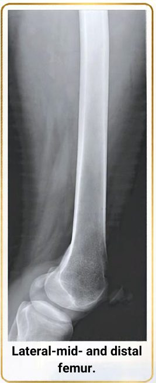
وضعية الجزءPart Position
Lateral Recumbent
الاستلقاء الجانبي.
- • Flex knee approximately 45° with patient on affected side, and align femur to midline of table or IR.اثنِ الركبة نحو 45 درجة والمريض على الجانب المصاب، وطابِق عظم الفخذ مع خط منتصف الطاولة أو IR.
- • Place unaffected leg behind affected leg to prevent over-rotation.ضع الساق السليمة خلف الساق المصابة لمنع الدوران الزائد.
- • Adjust IR to include knee joint (lower IR margin should be approximately 2 inches [5 cm] below knee joint).عدّل IR ليشمل مفصل الركبة (يجب أن تكون حافته السفلى أسفل مفصل الركبة بنحو 2 إنش [5 سم]).
إسقاط الرضّ الوحشي الإنسيTrauma Lateromedial Projection
- • Place support under affected leg and knee and support foot and ankle in true AP position.ضع دعامة تحت الساق المصابة والركبة، وأسنِد القدم والكاحل بوضع AP حقيقي.
- • Place IR on edge against medial aspect of thigh to include knee, with horizontal x-ray beam directed from lateral side.ضع IR على حافته مستنداً إلى الجهة الإنسية من الفخذ ليشمل الركبة، والشعاع الأفقي يُوجَّه من الجهة الوحشية.
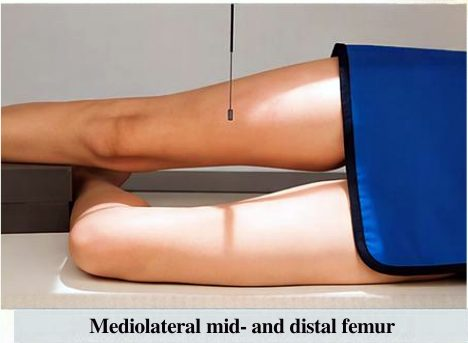
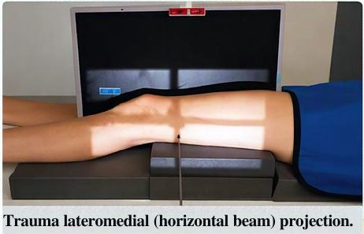
الشعاع المركزيCR
- • CR : CR perpendicular to femur and IR directed to midpoint of IRالشعاع المركزي: عمودي على عظم الفخذ وعلى IR، ويُوجَّه إلى منتصف IR.
الإسقاط الجانبي لعظم الفخذ: الأوسط والقريبLateral Femur: Mid- and Proximal
Lateral-mediolateral projection:femur: mid-and proximal
الإسقاط الجانبي (إنسي وحشي): عظم الفخذ، الجزء الأوسط والقريب.
دواعي الفحصClinical Indications
- • Mid- and proximal femur including lateral hip for detection and evaluation of fractures and bone lesions.الجزء الأوسط والقريب من عظم الفخذ مع الورك الجانبي، للكشف عن الكسور وآفات العظام وتقييمها.
وضعية المريضPatient Position
Place patient in the lateral recumbent position, with affected side down; provide pillow for head.
نضع المريض بوضعية الاستلقاء الجانبي والجانب المصاب إلى الأسفل، ونعطيه وسادة للرأس.
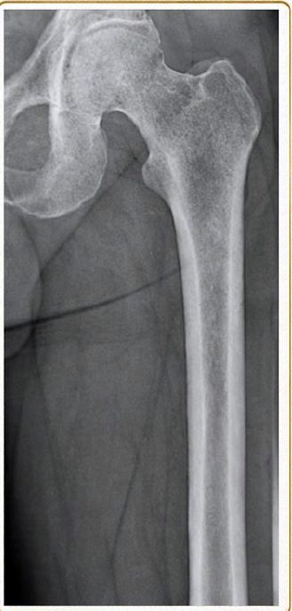
وضعية الجزءPart Position
- • Flex affected knee about 45° and align femur to midline of table.اثنِ الركبة المصابة نحو 45 درجة، وطابِق عظم الفخذ مع خط منتصف الطاولة.
- • Extend and support unaffected leg behind affected knee and have patient roll back (posteriorly) about 15° to prevent superimposition of proximal femur and hip jointمدّ الساق السليمة وأسنِدها خلف الركبة المصابة، واطلب من المريض أن يدور إلى الخلف نحو 15 درجة لمنع تراكب الجزء القريب من الفخذ مع مفصل الورك.
الشعاع المركزيCR
- • CR perpendicular to femur and CR directed to midpoint of IRالشعاع المركزي عمودي على عظم الفخذ، ويُوجَّه إلى منتصف IR.
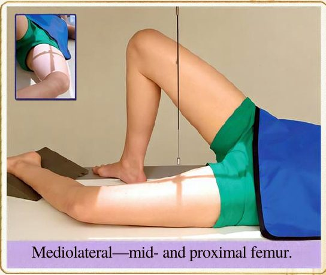
المحاضرة مسموعة
نص الأستاذ بالإنكليزي مثل الأصل · 8.6 دقيقة. اضغط أي جملة تسمعها، أو مصطلح منقّط تسمع لفظه ومعناه.
Projections of the Hip and Femurإسقاطات عظم الفخذ والورك
Projections of the Hip and Femur
AP unilateral Hip projection: Hip and proximal Femur
Axiolateral inferosuperior projection: Hip and proximal Femur—trauma
Modified axiolateral—possible trauma projection: Hip and proximal Femur
AP projection: Femur—mid- and distal
Lateral-mediolateral or lateromedial projections: Femur : mid- and distal
Lateral-mediolateral projection: femur: mid-and proximal
Technical Factorsالعوامل التقنية
Technical Factors
Minimum SID is 40 inches (102 cm).
IR size—35 × 43 cm (14 × 17 inches), Lengthwise
Exposure : 65-70 kVp , 8-12 mAs
Shielding Shield radiosensitive tissues outside region of interest. Ensure shielding does not obscure any aspect of femur.
AP Unilateral Hipإسقاط الورك الأمامي الخلفي (جانب واحد)
AP Unilateral Hip
AP unilateral Hip projection: Hip and proximal Femur
Clinical Indications
Postoperative or follow-up examination to demonstrate the acetabulum, femoral head, neck, and greater trochanter.
Evaluate condition and placement of any existing orthopedic appliance.
Patient Position
With patient supine, place arms at sides or across superior chest.
Part Position
Locate femoral neck and align to CR and to midline of table and/or IR.
Ensure no rotation of pelvis (equal distance from ASISs to table).
Rotate affected leg internally 15° to 20°.
CR
CR is perpendicular to IR, directed to 1 to 2 inches (2.5 to 5 cm) distal to midfemoral neck (to include all of orthopedic appliance of hip, if present).
Femoral neck can be located about 1 to 2 inches (3 to 5 cm) medial and 3 to 4 inches (8 to 10 cm) distal to ASIS.
Anatomy Demonstrated
The proximal one-third of the femur should be visualized, along with the acetabulum and adjacent parts of the pubis, ischium, and ilium.
Any existing orthopedic appliance should be visible in its entirety.
Axiolateral Inferosuperior (Danelius-Miller)الإسقاط المحوري الجانبي من الأسفل إلى الأعلى (دانيليوس-ميلر)
Axiolateral Inferosuperior (Danelius-Miller)
Axiolateral inferosuperior projection: Hip and proximal Femur—trauma Danelius-miller method
NOTE: This is a common projection for trauma, surgery, and postsurgery patients.
Clinical Indications
Lateral view for fracture or dislocation assessment in trauma hip situations when affected leg cannot be moved
Patient Position
Patient is supine, with pillow provided for head;
elevate pelvis 1 to 2 inches (3 to 5 cm) if possible by placing supports under pelvis (more important for thin patients and for patients on a soft pad or in a bed).
Part Position
Flex and elevate unaffected leg so that thigh is near vertical position and outside collimation field. Support in this position. (Do NOT place leg on collimator or x-ray tube due to risk of burns or electrical shock).
Place IR in crease above iliac crest and adjust so that it is parallel to femoral neck and perpendicular to CR. Use cassette holder if available, or use sandbags to hold cassette in place.
Internally rotate affected leg 15° to 20° unless contraindicated by possible fracture or other pathologic process (see warning above).
CR
CR is perpendicular to femoral neck and to IR.
Anatomy Demonstrated
Entire femoral head and neck, trochanter, and acetabulum should be visualized.
Modified Axiolateral (Clements-Nakayama)الإسقاط المحوري الجانبي المعدَّل (كليمنتس-ناكاياما)
Modified Axiolateral (Clements-Nakayama)
Modified axiolateral—possible trauma projection: Hip and proximal Femur Clements-nakayama method
Clinical Indications
Surgery for hip prosthesis when the patient has limited movement in both lower limbs and the inferosuperior projection cannot be obtained.
Patient Position
With patient supine, position affected side near edge of table with both legs fully extended. Provide pillow for head and place arms across superior chest.
Part Position
Maintain leg in neutral (anatomic) position (15° posterior CR angle compensates for internal leg rotation).
Rest IR on extended Bucky tray, which places the bottom edge of the IR about 2 inches (5 cm) below the level of the tabletop.
Tilt IR about 15° from vertical and adjust alignment of IR to ensure that face of IR is perpendicular to CR to prevent grid cutoff.
Center centerline of IR to projected CR.
CR
Angle CR mediolaterally as needed so that it is perpendicular to and centered to femoral neck. It should be angled posteriorly 15° to 20° from horizontal.
AP Femur: Mid- and Distalإسقاط AP لعظم الفخذ: الأوسط والبعيد
AP Femur: Mid- and Distal
AP projection: Femur—mid- and distal
Patient Position
Place patient in the supine position, with femur centered to midline of table; give pillow for head. (This projection also may be done on a stretcher with a portable grid placed under the femur.)
Part Position
Align femur to CR and to midline of table or IR.
Rotate leg internally about 5° for a true AP, as for an AP knee. (For proximal femur, 15° to 20° internal leg rotation is required, as for an AP hip.)
Ensure that knee joint is included on IR, considering the divergence of the x-ray beam. (Lower IR margin should be approximately 2 inches [5 cm] below knee joint.)
CR
CR is perpendicular to femur and IR.
Direct CR to midpoint of IR.
Lateral Femur: Mid- and Distalالإسقاط الجانبي لعظم الفخذ: الأوسط والبعيد
Lateral Femur: Mid- and Distal
Lateral-mediolateral or lateromedial projections: Femur: mid- and distal
Clinical Indications
Mid- and distal femur, including knee joint for detection and evaluation of fractures and/or bone lesions.
Patient Position
Place patient in the lateral recumbent position, or supine for trauma patient.
Part Position
Lateral Recumbent
Flex knee approximately 45° with patient on affected side, and align femur to midline of table or IR.
Place unaffected leg behind affected leg to prevent over-rotation.
Adjust IR to include knee joint (lower IR margin should be approximately 2 inches [5 cm] below knee joint).
Trauma Lateromedial Projection
Place support under affected leg and knee and support foot and ankle in true AP position.
Place IR on edge against medial aspect of thigh to include knee, with horizontal x-ray beam directed from lateral side.
CR
CR : CR perpendicular to femur and IR directed to midpoint of IR
Lateral Femur: Mid- and Proximalالإسقاط الجانبي لعظم الفخذ: الأوسط والقريب
Lateral Femur: Mid- and Proximal
Lateral-mediolateral projection:femur: mid-and proximal
Clinical Indications
Mid- and proximal femur including lateral hip for detection and evaluation of fractures and bone lesions.
Patient Position
Place patient in the lateral recumbent position, with affected side down; provide pillow for head.
Part Position
Flex affected knee about 45° and align femur to midline of table.
Extend and support unaffected leg behind affected knee and have patient roll back (posteriorly) about 15° to prevent superimposition of proximal femur and hip joint
CR
CR perpendicular to femur and CR directed to midpoint of IR
كل أسئلة المحاضرة: السؤال إنكليزي وتحته عربي، وكل خيار بلغتين، والجواب الصحيح معلّم ويّاه «ليش صح» · 0.4 MB
قراءة الأسئلة تحميلاضغط أي مصطلح منقّط تسمع لفظه ومعناه.